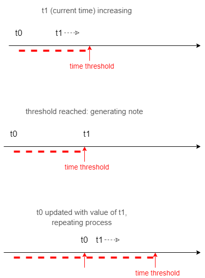
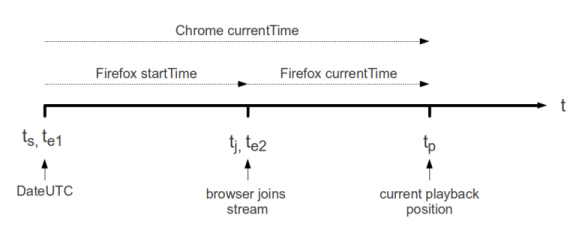
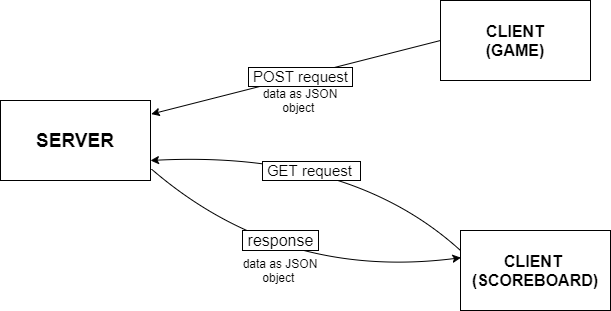

Erich-Robert Reinholtz (er17660), Andrei Alexandru (aa17956)
For this assingment, we have chosen to implement a website featuring two playable games.
The first one is "Covid Evasion", where the player's task is to navigate on a road whilst avoiding as many of the incoming viruses as possible.
The second game is a music game called "Beat Covid". It has a similar theme to the first one, except that, this time, the player needs to successfully spray away the viruses by playing them as notes in sync with a song.
We have used the latest standard of HTML, HTML5, and our code passes the HTML5 validator provided by the World Wide Web Consortium with no errors or warnings.
We have no inline CSS in our HTML pages, and all of our styling comes from stylesheets in the css directory. We extensively use tags such as transform to animate some elements from the website. We tried to make the styling adaptive, so that the website looks good on different screen sizes. However, the site is not intended to work on mobile devices.
This area is one of the more sophisticated ones in our website. We have made extensive use of various JavaScript techniques for a variety of tasks.
Gameplay
One of the uses of JS was the gameplay itself, which, in both games' case, relies on updating the canvas content frame by frame.
We used classes to update object properties, i.e. the virus in "Beat Covid", which has a position, corresponding note, etc.
In "Covid Evasion", the player's challenge is to avoid as many threats as possible. The trick is, rather than making the hazards appear at random locations, we have implemented a behaviour which makes the virus follow the character wherever he goes. Hence, remaining at one location for too long results in failing the game.
JavaScript sounds
We have made extensive use of JS sound methods, especially in "Beat Covid", where we had to sync the incoming notes to the music beat as it's heard. To do that, the first step was using the BPM of the song to calculate the exact number of milliseconds it takes for one note (or break) to be played. We made use of the audio method "currentTime" to generate a new note from our note map as soon as that time threshold is reached.
One of the bigger issues we've had with this is that some browsers, for example Mozilla Firefox, get the precision of the "currentTime" audio function rounded (for example, by 2ms in Firefox 60). As more and more time goes by, the delay in note generation increases, until it becomes so large that the notes fall out of sync. We have tried to fix this manually using conditional variations of the interval value, based on the browser used. The only browser which did not require this is Google Chrome, which usually preserves the appropriate time interval between notes.
Another issue that could have also contributed to this may be attributed to the way each broswer tackles the method. For example, we have discovered that Chrome and Firefox interpret "currentTime" differently. While the latter only begins the measurement after the browser joins the stream, the former does so at the beginning of the stream itself. This is illustrated in the following diagram, made by Sean O'Halpin:
Overall, Google Chrome has proven to rarely have desynchronisation issues at all, so the note generation accuracy is preserved. Hence, it is the browser we recommend for this particular game.
Client-Server communication and exchange
Lastly, all of our server-side programming was implemented in JS, and fetching the data on the client side is also done using JS.
In order to provide visuals for our website, we have used PNGs which we've manipulated using GIMP 2.
We've made use of a variety of tools, such as path selectors, layers, alpha channels, rotations. We have also made colour balance and contrast alterations.
One of the visuals that were more interesting to manipulate is that of the white spray effect in "Beat Covid". The starting point was an explosion gif, which we altered, in order to obtain a white spray-like visual. We reconfigured the colouring across the entire image into different nuances of white, and then applied the changes across all frames.
We learnt different methods to create our svg elements on Inkscape, such as path editing, grouping, transformations, gradients, patterns. This is best illustrated in our logo presented below. We also used grouping and other elements to create fluid animations.
For the server, we used Node.js and Express. We render the pages locally on port 8080.
The server initially redirects the browser to the index page, which features the game selection menu.
It also enables the SQLite3 database and handles its functionality. The server-client communication and exchange is done via GET and POST requests.
For the database, we've made use of SQLite3. The main purpose of the database is to store the scores obtained from playing the two games and to redirect those to be viewed within the scoreboards.
The database also keeps track of the last saved player name so that, if one user plays the games multiple times, there is no need to rewrite the name each time, for the score to be saved.
POST Request: The incoming data is sent from the client side using the Fetch API, and is initially packed up as a JSON string. After the data is parsed, it is stored in the appropriate table.
GET Request: The scoreboards ask for lists of all player names and their respective scores, in descending order, based on result values. The data is collected through the each method and stored in a list. It is then JSON stringified and sent as response.
One of the dynamic features of our website consists of the aforementioned client-side and server-side techniques.
However, probably the most dynamic aspect is represented by the pages containing the actual playable games. Both "Covid Evasion" and "Beat Covid" make use of a canvas whose contents get updated frame by frame.
For "Covid Evasion", the user input is done through pressing the left and right arrow keys. Respectively, for "Beat Covid", the keys 'C', 'V', 'B', 'N', 'M' are used.
In order to simulate the objects' movement, their coordinates get updated at each new iteration of the game loop, then the entities are drawn onto the canvas. Some objects have a constant motion offset, for example, the backgrounds or the incoming viruses. Other objects' movement depends on the indications of the player throught the key input (i.e. the character from Covid Evasion).